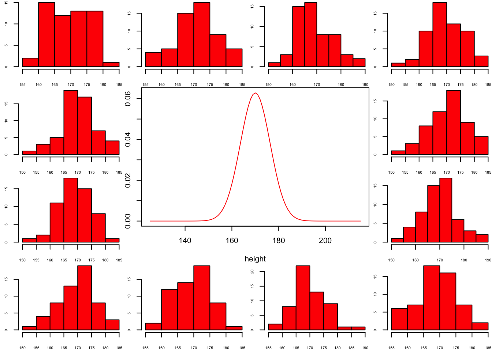

layout(matrix(c(2:6,1,1,7:8,1,1,9:13), 4, 4))
n = 56 # Sample size
df = n - 1 # Degrees of freedom
mu = 170
sigma = 6.35
height = seq(mu-45, mu+45, 1)
par(mar=c(4,2,0,0))
plot(height, dnorm(height, mean = mu, sd = sigma), type='l', col="red")
n.samples = 12
for(i in 1:n.samples) {
par(mar=c(2,2,0,0))
hist(rnorm(n, mu, sigma), main="", cex.axis=.5, col="red")
}